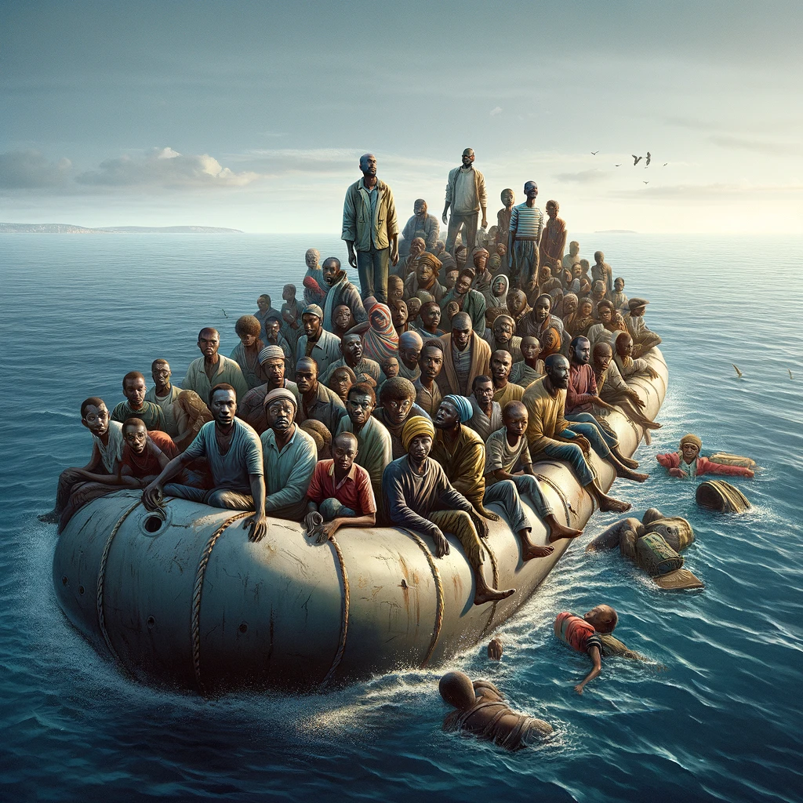
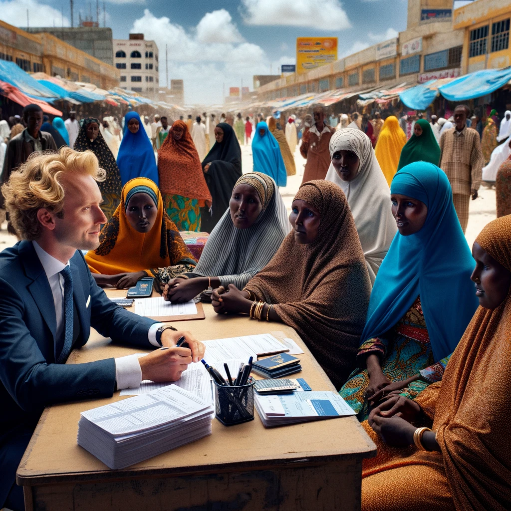
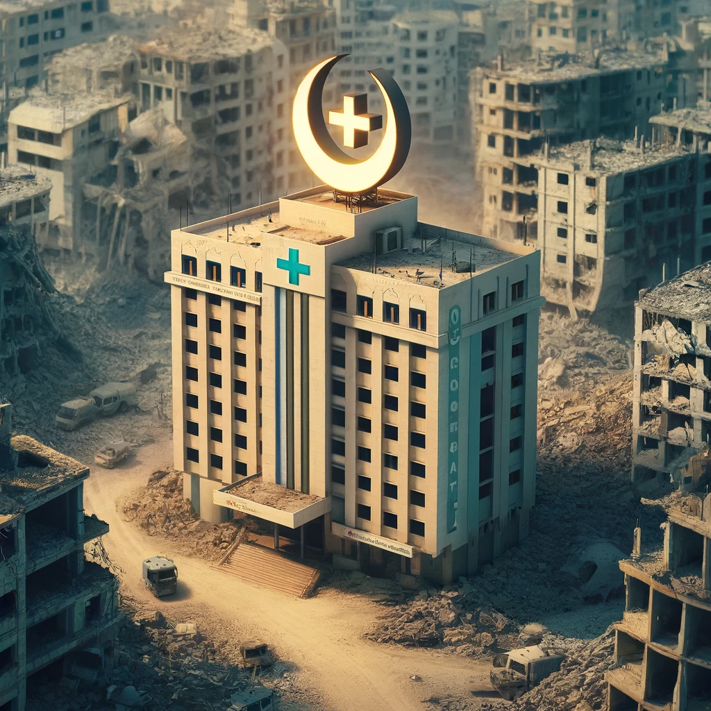

Unsere Dienstleistungen
Bei One Way Out of the Middle East bieten wir umfassende Rettungsdienste an, die von der Planung und Koordination bis zur Durchführung und Nachbetreuung reichen. Unsere Hauptdienstleistungen umfassen:
Logistische Planung
Wir sorgen für sichere und effiziente Reiserouten, inklusive Transport und Unterbringung.
Beratung und Unterstützung
Umfassende Beratung zu Sicherheitsmaßnahmen, rechtlichen Bestimmungen und kultureller Anpassung.
Notfallintervention
Sofortige Reaktion im Krisenfall, Bereitstellung von Notfallausrüstung und medizinischer Unterstützung.
Post-Rescue-Support
Begleitung und Unterstützung nach der Ankunft zur Integration in die neue Umgebung.